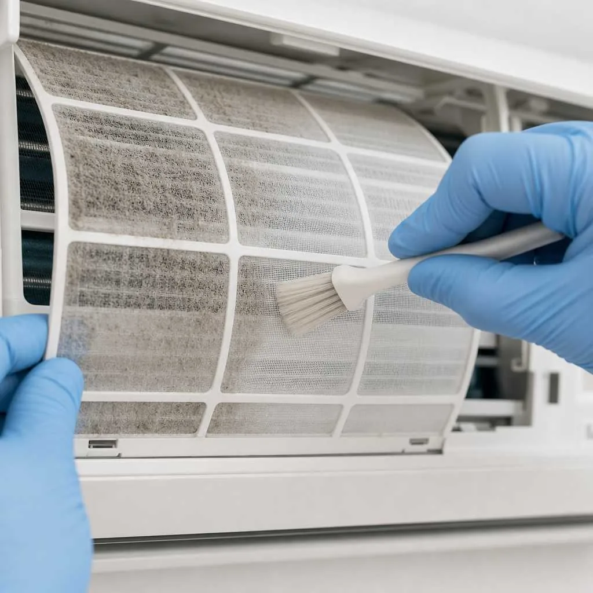
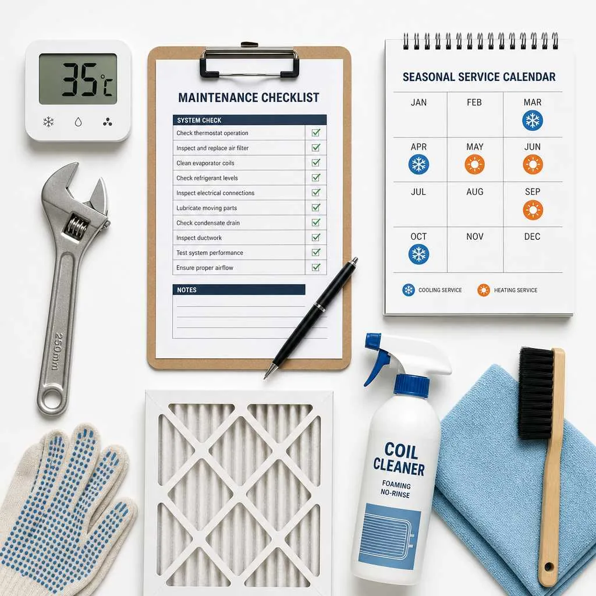

Ar Condicionado Lisboa: Instalar, Limpar e Manter o Split
Um split bem instalado e com manutenção regular trabalha melhor, pode consumir menos energia e tende a durar mais tempo. Reunimos o essencial sobre instalação, limpeza e revisão para casas e escritórios na Grande Lisboa, Cascais e Setúbal.
O ar condicionado é hoje parte do conforto de muitas casas e escritórios na região de Lisboa — no calor do verão e também no apoio ao aquecimento em dias mais frios. Para tirar o melhor partido do equipamento e evitar surpresas, convém planear bem a instalação, manter a limpeza e não adiar a manutenção. Se precisar de apoio, o serviço de " f'climatização e ar condicionado ' "está disponível através da AirFix.pt, parceiro FAZDETUDO.PT.
Primavera: A Janela Ideal para Instalação
Março, abril e maio costumam ser meses favoráveis para instalar ou substituir um split: as temperaturas são mais amenas para o trabalho nas unidades exteriores, a procura de técnicos ainda não está no pico de verão e há tempo para testar o equipamento antes do calor intenso.
Em muitos condomínios na Grande Lisboa, a instalação de unidades exteriores na fachada pode exigir autorização da administração. Vale a pena confirmar as regras do prédio antes de marcar a obra.
Inverno: Uma Oportunidade Subestimada
Os splits modernos com bomba de calor podem aquecer de forma eficiente mesmo com temperaturas externas baixas. Em Lisboa, onde o inverno é relativamente ameno, o modo aquecimento pode ser uma alternativa útil em divisões mal isoladas ou em escritórios com pouca exposição solar.
Se está a planear instalar um split novo, pedir orçamento em setembro ou outubro pode dar mais margem de agenda. Fora da época alta costuma existir maior disponibilidade para agendar instalações e manutenção.
Tipos de Split para Casas e Escritórios em Lisboa
Nem todos os splits são iguais, e a escolha errada pode aumentar o consumo na fatura da luz. Para habitação na Grande Lisboa, estes são os formatos mais comuns:
Split Mono Inverter
É a opção mais frequente em apartamentos e moradias: uma unidade exterior alimenta uma unidade interior. A tecnologia inverter ajusta a potência ao necessário, o que pode ajudar a manter o conforto com menor desgaste do compressor.
Multi-Split
Uma unidade exterior serve várias unidades interiores. Pode fazer sentido quando o espaço na fachada ou na cobertura é limitado e quer climatizar mais do que uma divisão com um só sistema.
Cassete de Teto
Usada sobretudo em escritórios, lojas e espaços comerciais. Distribui o ar em várias direções e integra-se no teto falso — útil em salas amplas.
Na faixa costeira de Cascais e Setúbal, a salinidade pode acelerar a corrosão das aletas da unidade exterior. Em zonas próximas do mar, convém considerar equipamentos com tratamento anticorrosivo e incluir a revisão da unidade exterior no plano de manutenção.
Limpeza de Filtros: O Que Acontece Quando se Ignora
Um filtro sujo é um dos problemas mais frequentes nos splits domésticos. Não é apenas estética: filtros entupidos obrigam o equipamento a trabalhar mais para atingir a temperatura desejada, o que pode reduzir a eficiência e pode aumentar o consumo. A qualidade do ar interior também tende a piorar.
Durante os meses de uso intensivo (junho a setembro para arrefecimento, e dezembro a fevereiro para aquecimento), a limpeza regular dos filtros é recomendada. Em Lisboa e Cascais, onde o pó e o sal marinho podem acumular-se mais depressa junto à costa, convém não deixar passar demasiado tempo entre lavagens.
Como Limpar os Filtros de um Split em Casa
Num split de parede doméstico, o processo é simples: desligue o aparelho, abra a tampa frontal da unidade interior, retire os filtros (geralmente encaixados por clips), lave com água morna e detergente suave, enxague bem e deixe secar completamente antes de recolocar.

Se ao abrir a tampa encontrar manchas escuras no evaporador ou um cheiro a mofo quando liga o equipamento, a limpeza caseira dos filtros já não chega — nesse caso, peça uma limpeza técnica profissional.
Limpeza Profissional vs. Limpeza Doméstica
A limpeza dos filtros pelo utilizador é suficiente como manutenção regular. Uma vez por ano, habitualmente na primavera, convém contratar uma limpeza profunda: serpentina interior, turbina, bandeja de condensados e verificação da unidade exterior. Esta distinção entre manutenção mensal e revisão técnica anual é frequentemente ignorada — e pode encurtar a vida útil do equipamento se só se limparem os filtros.
Manutenção AVAC em Lisboa: O Que Inclui e Com Que Frequência
A manutenção de climatização abrange mais do que a limpeza dos filtros. Em habitação, um plano típico inclui verificação de pressões, estado das serpentinas, drenagem de condensados, ligações elétricas e teste de funcionamento nos modos frio e calor. A parte elétrica deve ser verificada por quem tem competência para o efeito.
Em sistemas comerciais ou de maior dimensão, podem existir requisitos legais e técnicos específicos. Trabalhos que envolvam gases refrigerantes, pressões do circuito ou intervenção técnica no equipamento devem ser realizados por técnicos habilitados ou certificados.
A falta de manutenção nos sistemas de climatização pode contribuir para " "desperdício energético em edifícios — por isso, uma revisão preventiva antes " "do verão costuma compensar.
Calendário de Manutenção Recomendado para Lisboa
Abril é, para muitas famílias, um bom mês para a manutenção anual: o verão ainda não chegou, há tempo para corrigir pequenas falhas e o equipamento entra na época quente em melhores condições.
- Habitação: manutenção anual na primavera; limpeza dos " "filtros de junho a setembro (e no aquecimento, se usar com frequência).
- Comércio e serviços: intervalos mais curtos, consoante " "horas de funcionamento e normas internas do edifício.
Instalação, Manutenção Própria vs. Serviço Profissional
A questão mais comum entre proprietários em Lisboa é simples: o que posso fazer eu mesmo e o que exige um técnico? A resposta prática, em cartões:
Instalação da unidade
Abordagem: Deve ser feita por técnico habilitado, com " "formação adequada para gases refrigerantes e ligação elétrica segura.
Em Lisboa e Cascais: Peça orçamento a instalador " "certificado; instalação incorreta pode invalidar a garantia e aumentar " "riscos.
Limpeza de filtros
Abordagem: Pode ser feita pelo utilizador com " "regularidade durante a época de uso.
Em Lisboa e Cascais: Reserve alguns minutos por mês; " "filtros limpos ajudam o aparelho a trabalhar melhor.
Limpeza do evaporador e condensador
Abordagem: Requer produtos e ferramentas adequados; " "recomenda-se serviço técnico.
Em Lisboa e Cascais: Uma vez por ano, antes do verão, " "pode evitar odores, mau desempenho e avarias.
Recarga de gás refrigerante
Abordagem: Apenas por técnico habilitado; envolve " "manuseamento de fluidos refrigerantes e verificação de estanquidade.
Em Lisboa e Cascais: Se o aparelho arrefece pouco, não " "tente resolver sozinho — peça diagnóstico.
Verificação de pressões e carga elétrica
Abordagem: Profissional, com instrumentação adequada " "ao tipo de gás e modelo do equipamento.
Em Lisboa e Cascais: Incluir na manutenção anual de " "primavera pode detetar fugas antes de avarias maiores.
Custos de Instalação e Manutenção na Grande Lisboa
Os valores publicados online raramente refletem a realidade de cada casa: acesso à fachada, comprimento da tubagem, potência do equipamento e estado da instalação elétrica alteram o orçamento. Os intervalos abaixo são orientativos e devem ser confirmados após visita ou descrição do trabalho.
Instalação de um split doméstico
Para um split standard (potência habitual para quartos ou salas pequenas), com acesso razoável ao exterior, a instalação costuma situar-se numa faixa que varia consoante marca, distância entre unidades e trabalhos extra (suportes, furações, proteções). Peça sempre orçamento por escrito.
Manutenção anual
Uma revisão técnica completa de um split doméstico em Lisboa pode oscilar entre valores modestos e montantes mais altos se forem necessárias peças, produtos de higienização ou deslocação. A manutenção preventiva costuma sair mais barata do que uma reparação de emergência no agosto.
O custo de adiar a manutenção
Recargas de gás, substituição de compressor ou reparações elétricas podem custar significativamente mais do que uma revisão anual. Além do valor financeiro, um equipamento mal mantido pode aumentar o consumo e pode encurtar a vida útil do aparelho.

Erros Mais Comuns na Instalação e Uso do Split em Lisboa
Na instalação e no dia a dia, estes padrões repetem-se com frequência na Grande Lisboa:
- Subdimensionar o equipamento. Um quarto exposto a sul com " "janelas amplas pode precisar de mais capacidade do que a área em m² sugere à " "primeira vista.
- Má ventilação da unidade exterior. Instalar em patamar " "fechado ou sem espaço de renovação de ar pode forçar o sistema e aumentar o " "desgaste.
- Ignorar a drenagem. O condensado da unidade interior deve " "escoar corretamente; tubagens entupidas ou mal inclinadas causam gotejamentos " "e humidade nas paredes — situações em que o serviço de " f'reparações gerais ' "também pode ajudar.
Precisa de instalar, limpar ou fazer manutenção ao ar condicionado? O serviço especializado é realizado através da " 'AirFix.pt, ' "parceiro FAZDETUDO.PT. Também pode consultar a página de " f'climatização e ar condicionado.
Perguntas frequentes
Qual é o melhor mês para instalar ar condicionado em Lisboa?
Abril costuma ser um bom mês: a procura ainda não está no pico, há disponibilidade de técnicos e as temperaturas permitem testar o equipamento antes do calor intenso. Março e maio também são opções sólidas.
Com que frequência devo limpar os filtros do meu split em Lisboa?
Durante os meses de uso intensivo (junho a setembro para arrefecimento e, se usar aquecimento, dezembro a fevereiro), lavar os filtros a cada poucas semanas costuma ser adequado. Em zonas com mais pó ou perto do mar, pode ser necessário limpar com mais frequência.
A manutenção do ar condicionado é obrigatória por lei em Portugal?
Em habitações particulares, a manutenção preventiva é sobretudo uma recomendação técnica e de garantia. Em edifícios comerciais ou sistemas de maior dimensão, podem aplicar-se requisitos legais específicos. Em caso de dúvida, confirme com técnico habilitado.
Porque é que o meu split cheira a mofo quando liga?
O cheiro a mofo costuma indicar humidade e depósitos no evaporador da unidade interior — muitas vezes após filtros sujos ou longos períodos sem limpeza profunda. Uma higienização técnica resolve na maioria dos casos.
Preciso de autorização do condomínio para instalar um split em Lisboa?
Na maioria dos casos, sim. A colocação de unidades exteriores em fachadas de prédios em regime de condomínio requer aprovação prévia da administração. Confirme o regulamento interno antes de avançar.
Qual a diferença entre instalar um split em Cascais e no centro de Lisboa?
A proximidade ao mar em Cascais e na faixa costeira de Setúbal favorece a corrosão das aletas exteriores. Convém equipamentos com proteção adequada e revisões mais atentas à unidade exterior.
Vale a pena comprar um split com maior potência do que o necessário?
Em geral, não. Um split sobredimensionado pode ligar e desligar com demasiada frequência, o que pode aumentar o desgaste e o consumo sem melhorar o conforto de forma proporcional.
A AirFix.pt presta serviços fora de Lisboa?
O serviço especializado é realizado através da AirFix.pt. Consulte a disponibilidade para a sua zona.